101 Reasons to use QGIS
Keith Jenkins
Keith Jenkins
GIS Librarian
Cornell University
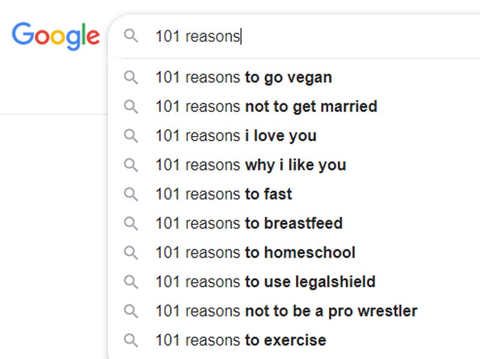
101 reasons... why I like QGIS
QGIS user since 2011
101 reasons... not to be a pro wrestler
101 reasons... to fast
QGIS starts up fast
Data source browser - no need to "connect to folder"
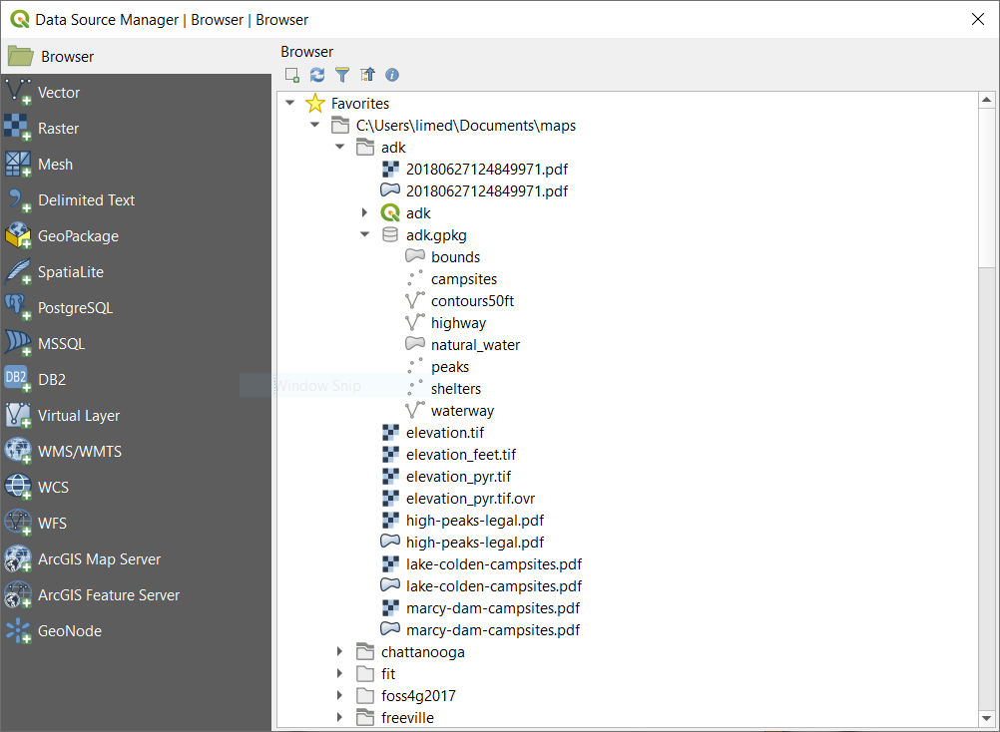
Drag-and-drop any data file
101 reasons... why i like you
.shp
.shz, .shp.zip
vector formats
.shp, .shz, .shp.zip, .gpkg, .gpx, .kml, .e00, .dwg, .dxf, .mdb, .geojson, .topojson, etc.
.gdb (proprietary format)
101 reasons... not to get married
import geotagged photos as points
support for mesh data
raster formats
.tif, .img, .xyz, .asc, .adf, .bil, .ecw, .sid, .jp2, .hdf, etc.
.pdf (as raster or vector)
.csv, .txt, .xls, .xlsx
detect field types
option to automatically trim fields
QGIS respects Excel cell types
101 reasons... i love you
edit .xlsx files from within QGIS
refactor fields
Virtual Layers (SQL!)
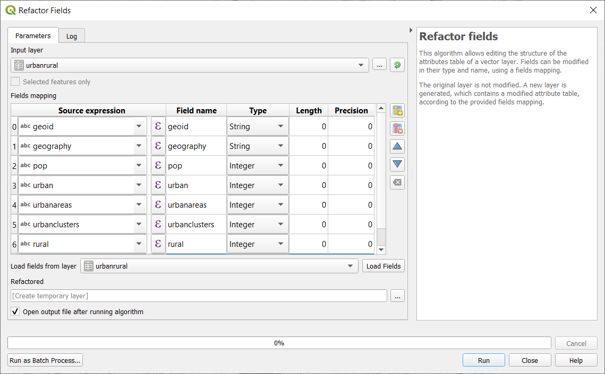
QGIS respects Excel (.xlsx) data types
join tables (even integer to string!)
join attributes by location ("spatial join")
you don't have to join every field!
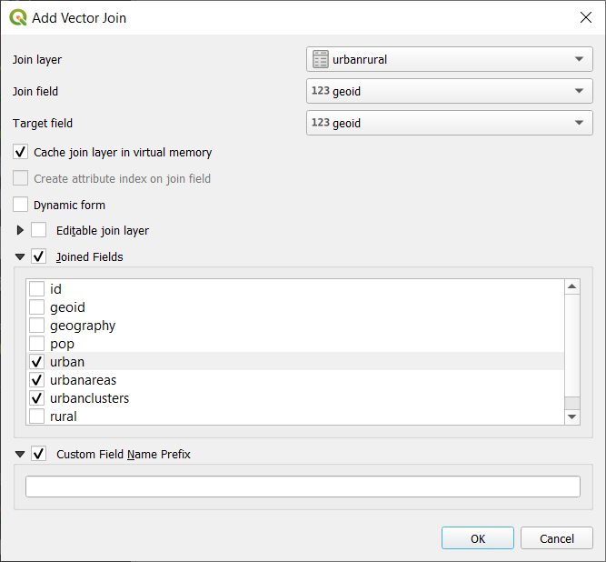
update selected features
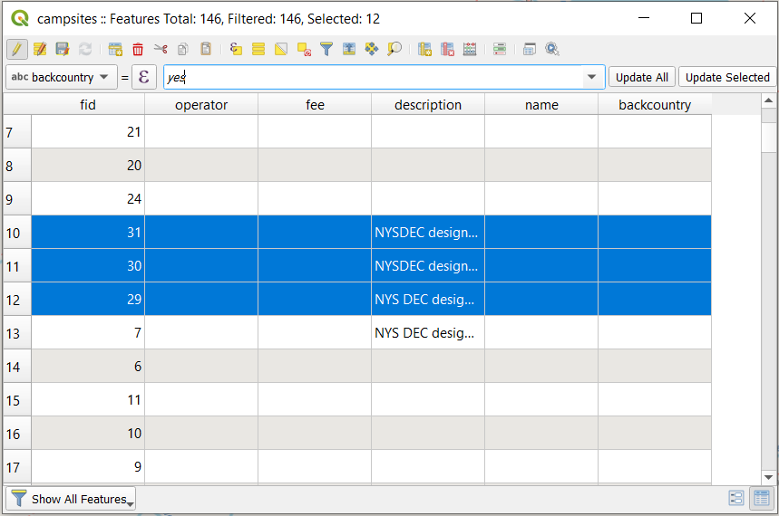
Graphical selection tools
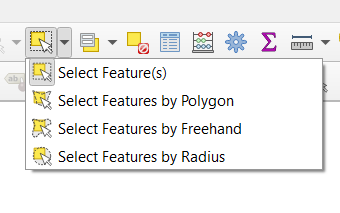
Powerful expression editor
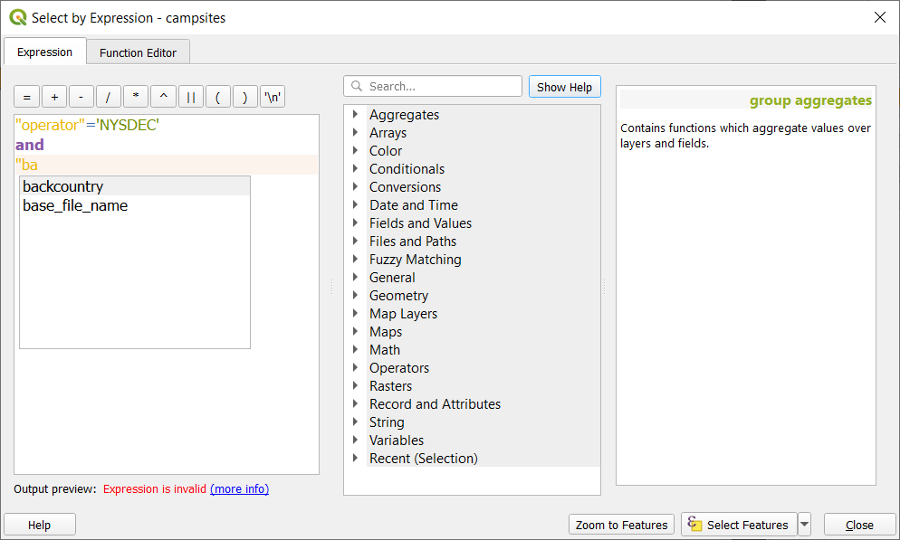
search for functions
VERY! powerful expression editor - geometry functions!
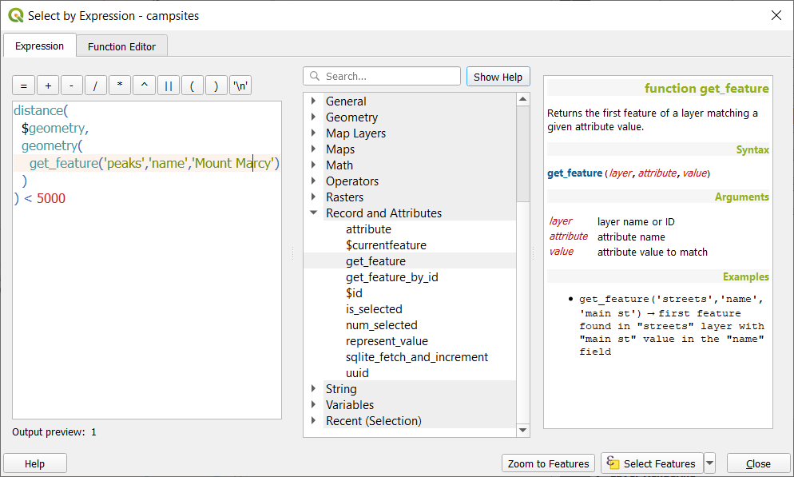
Simple (yet powerful!) select-by-form
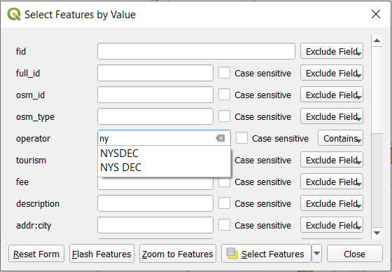
edit geometries in-place
Copy and paste to new layer
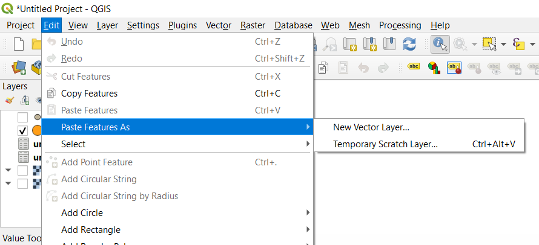
Temporary Scratch layers - no need to clutter up your drive!
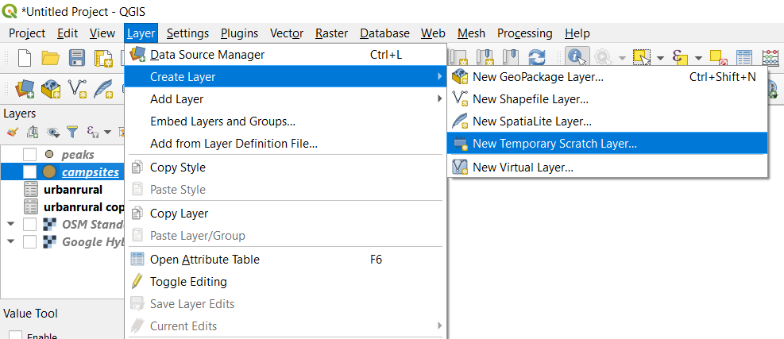
Processing Toolbox
101 reasons... to exercise
search within processing toolbox
fast processing tools
honest progress bars!
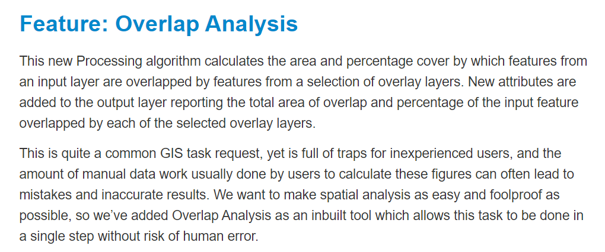
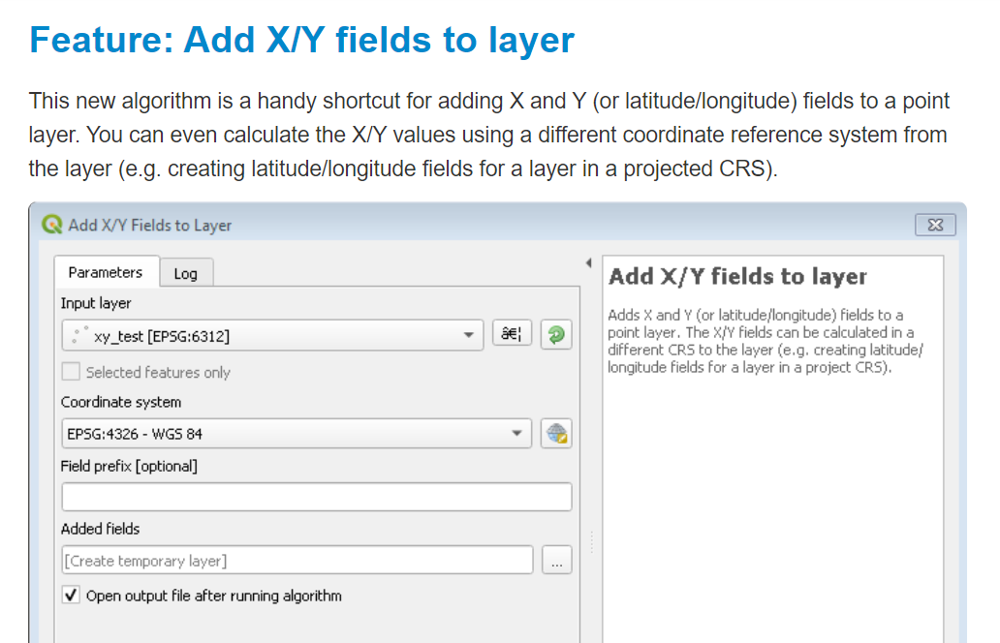
temporary outputs
won't clutter up your drive
temp layer - make permanent
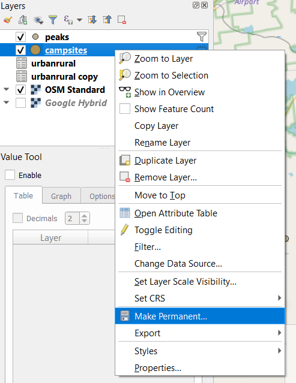
processing tools "Run as Batch Process..."
output to .gpkg (geopackage) - new or existing file
package layers to single geopackage file
graphical modeler
export model to python script
Cartography
101 reasons... i love you
Feature-by-feature opacity
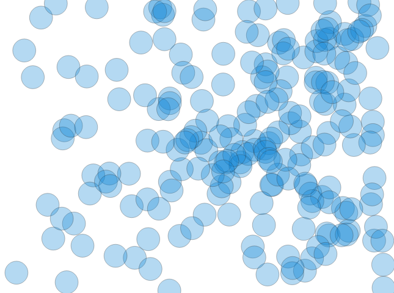
Blending modes - multiply/screen/dodge/etc.
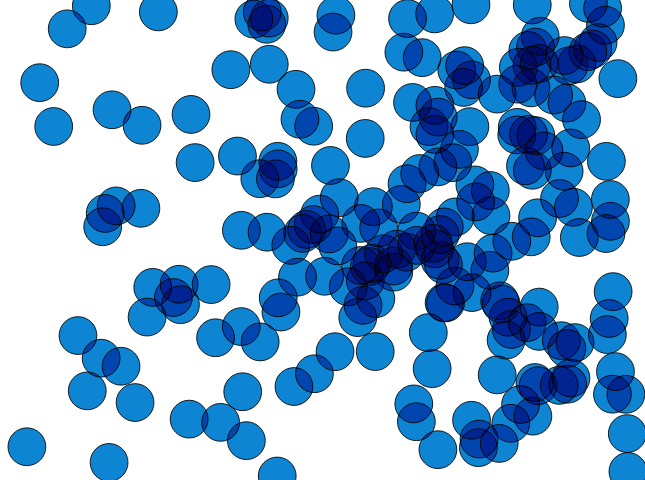
Data-defined overrides
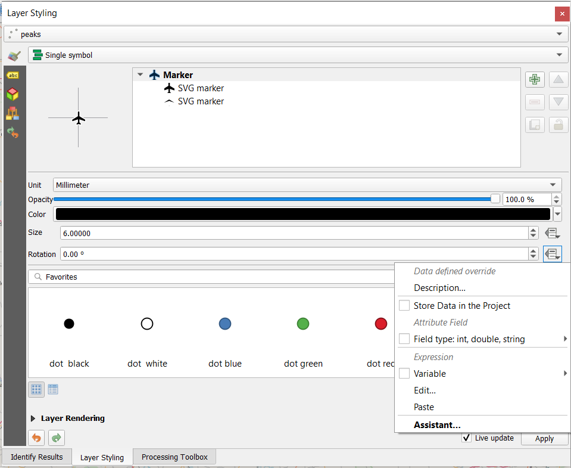
callout lines
hillshade on-the-fly
point heatmap style
point cluster style
copy and paste styles
print composer
multiple map views
3d map viewer
3d extrusion of vector data
search for CRS
CRS valid area preview
unique EPSG ids
search for settings
locator bar - search for anything
user profiles
define common colors for a project
plugins
python
QuickMapServices plugin
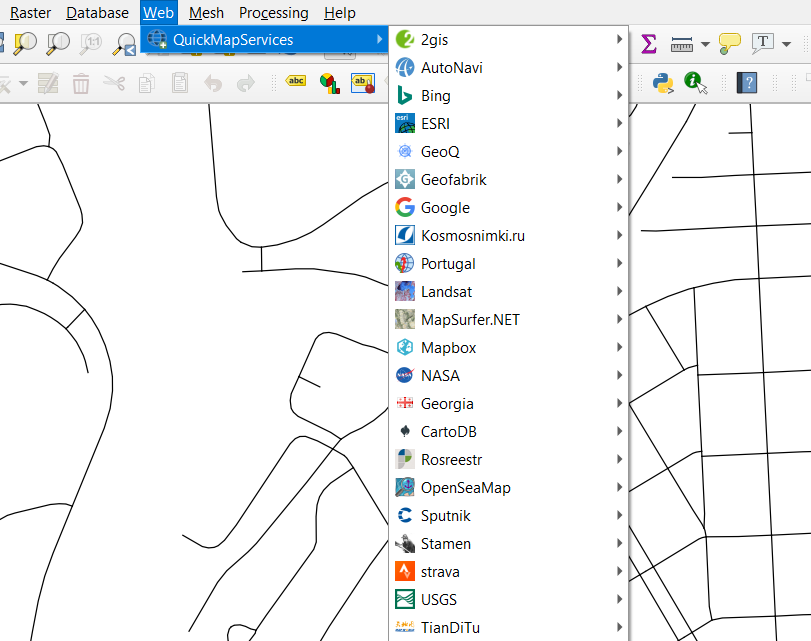
OpenStreetMap "Humanitarian"
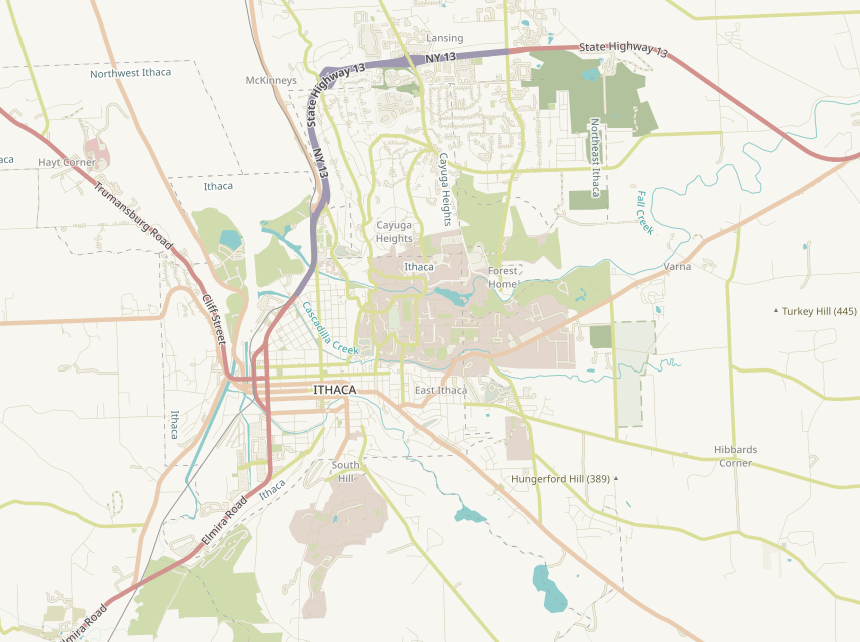
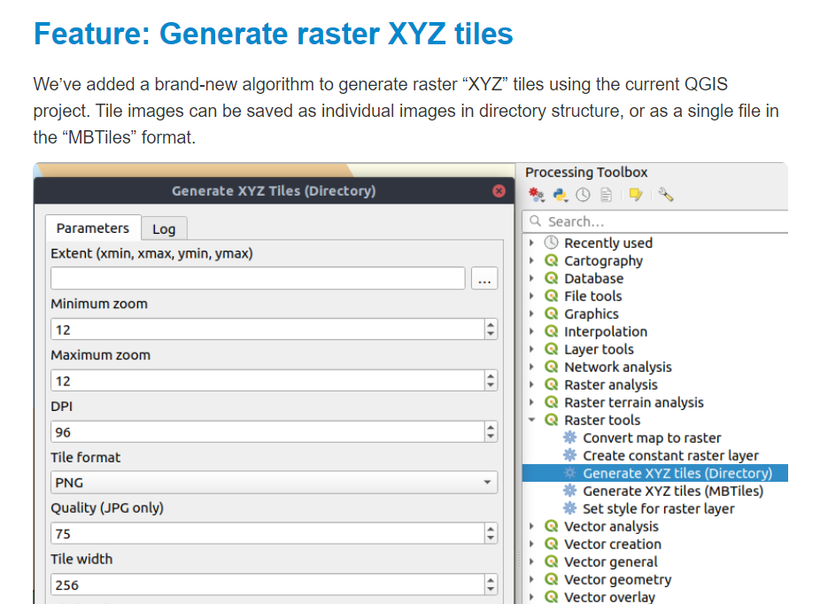
OpenRouteService plugin
Pelias geocoding plugin
Data Plotly
Geometry Checker
QuickOSM
OSM Downloader
Profile Tool
TimeManager
Georeferencer
Vector Bender
"Plugin Builder" plugin
QGIS provides access to other open source tools
GDAL, GRASS, SAGA, R
Discover QGIS 3.x
QGIS Cartography
QGIS Map Design
QGIS for Hydrological Applications
PyQGIS Programmers Guide
101 reasons... to homeschool
Community
QGIS developers are users
QGIS users are developers
responsive bug reporting
new releases every 4 months!
visual changelog
QGIS Chattanooga Oct 25 2019
QGIS Ithaca April 2020
gis.stackexchange.com -- top tag is "qgis"
GIS Help Desk at Mann 2-4pm weekdays